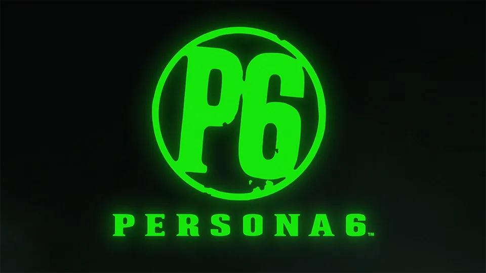

Luiso · 9 de septiembre de 2026 · 2 min de lectura
Una falla aparentemente relacionada con la API de Steam provocó una de las filtraciones más grandes de información sobre videojuegos recientes. Durante las últimas horas, sitios especializados en seguimiento de logros comenzaron a detectar listas pertenecientes a juegos inéditos o todavía no anunciados públicamente.
Entre los nombres que aparecieron se encuentran Persona 6, Kingdom Hearts IV, Ace Combat 8: Wings of Theve, Attack on Titan 3, Clive Barker's Hellraiser: Revival, Gears of War: E-Day, Fable, Silent Hill: Townfall y varios proyectos más.
El origen de la información parece estar relacionado con un problema de la propia API de Steam. El propietario de Exophase, conocido como x3sphere, explicó que listas que deberían haber permanecido privadas quedaron temporalmente accesibles, permitiendo que el sistema de seguimiento del sitio las detectara automáticamente.
Los logros se pueden ver acá: https://www.exophase.com/game/persona-6-steam/achievements/
El problema no se limitó a revelar que determinados juegos tienen una versión para PC. En algunos casos quedaron expuestos nombres y descripciones de logros, información que puede revelar elementos de la historia, localizaciones, personajes, mecánicas e incluso posibles contenidos todavía no anunciados.
El caso de Kingdom Hearts IV es particularmente llamativo porque algunas descripciones de logros parecen apuntar a elementos narrativos y posibles mundos que todavía no fueron presentados oficialmente. Persona 6, por su parte, también apareció entre las listas afectadas pese a que Atlus todavía no ha presentado públicamente información detallada sobre el juego.
La filtración parece haber mezclado juegos conocidos, títulos todavía no anunciados e incluso proyectos que podrían corresponder a versiones antiguas, prototipos o contenidos que finalmente sean descartados.
Por el momento, Valve, Atlus y Square Enix no han presentado una confirmación oficial de los datos filtrados. Pero habla de que el desarrollo de Persona 6 y otros juegos ya están muy avanzados.
Y hay otra cuestión importante: las listas contienen potenciales spoilers. Por eso, para quienes estén esperando estos juegos, conviene evitar buscar o leer las descripciones completas de los logros hasta que la situación esté aclarada.